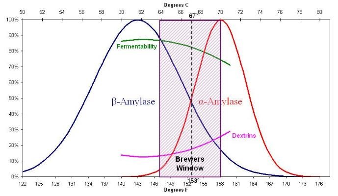

Manipulations
Propreté
Sources :
Tout d’abord, il est important de bien laver tout l’équipement qui sera en contact avec la bière. Pour le plastique, le verre et l’aluminium, il est possible d’utiliser du Chloroclean (savon rose) en concentration de 1 à 4 cuillères à table dans quatre litres d’eau. Il est à noter que ce détergent n’est pas du tout recommandé pour l’acier inoxydable. Pour ce matériau et ceux mentionnés ci-haut, il est suggéré d’utiliser de l’ Oxiclean sans flagrance , en concentration de une à deux cuillère à thé dans quatre litres d’eau, ou du PBW, en concentration de 0,75 à 2 cuillère à table dans quatre litres d’eau. Il est également possible d’utiliser de l’eau de javel, pour le plastique et le verre. Dans tous les cas, le matériel doit absolument être rincé abondamment. Bien que ces produits soient plus efficaces lorsqu’ils sont chauffés entre 55°C et 70°C, il est possible de les conserver dans un baril sous pression. Autrement, s’il est laissé à l’air libre, la solution doit être remplacée au maximum toutes les 24 heures. Les temps de contact nécessaire varient en fonction de la quantité de matière à dégrader. S’il n’y a pas de protéines issues de la fermentation qui ont adhérées aux parois, une minute suffit. Par contre, s’il reste beaucoup de résidus, il est possible de laisser tremper l’équipement environ une heure afin de faciliter grandement son nettoyage. Il est important d’utiliser un tissu non abrasif, car les égratignures sont l’endroit idéal pour la propagation de bactéries. Il est recommandé de rincer abondamment et idéalement avec de l’eau chaude pour terminer. Ensuite, il est nécessaire d’aseptiser l’équipement qui sera en contact après l’étape d’ébullition. Les produits disponibles sont l’Aseptox, le Star San et l’Iostar. Les produits sont équivalents en termes d’efficacité lorsqu’ils sont utilisés aux concentrations recommandées. Bien que l’Aseptox soit moins dispendieux, il faut souvent attendre plusieurs minutes avant qu’il soit complètement dissout. Ces produits ne doivent pas être chauffés à plus de 50°C et il n’est pas nécessaire de rincer l’équipement. Bien qu’ils ne soient pas toxiques, il est de bonne pratique de laisser s’égoutter au maximum l’excédent d’assainissant. Tout équipement doit être lavé et séché aussitôt que possible, afin d’éviter que certains résidus ne sèchent. Pour les tuyaux, il est recommandé de les suspendre pour qu’ils s’égouttent.
Équipement
Sources :
- Les métaux : BrewYourOwn
- Entretien et modification de l’acier inoxydable: BrewYourOwn
- Aluminium ou acier inoxydable : BeerSmith
- Entretien métaux : John Palmer
- Entretien acier inoxydable : Julien
- Passivation acier inoxydable : BeerSmith
Un équipement de qualité est sans équivoque l’un des éléments clés pour une bière réussie. Lorsque vient le temps de choisir le bon équipement, plusieurs caractéristiques doivent être prises en comptes. Tout d’abord, il est impératif d’être conscient des options qui sont offertes et des rabais possibles auprès des fournisseurs. Les combinaisons de prix, de performance, de durabilité et d’effort de maintenance doivent être également considérées afin d’effectuer un achat réfléchi.
Chaudrons et pièces en acier inoxydable
L’acier inoxydable est le matériel le plus commun dans le domaine, parce que le chrome qu’il contient le rend résistant à la corrosion et, contrairement à l’aluminium, aux détergents à base de caustique ou d’oxygène, tel que l’Oxiclean. Deux types d’acier inoxydable sont disponibles, soit la série 200 et la 300 qui se distinguent notamment par leur composition. En effet, la série 200 contient du manganèse et de l’azote, tandis que la série 300 contient du nickel. La série 200 est beaucoup moins dispendieuse et à peine moins résistante à la corrosion, ce qui peut être pallié par de simples entretiens périodiques. Il est à noter que la série 200 ne peut être soudée. Habituellement, la passivation est effectuée avec de l’acide nitrique avant que l’équipement ne quitte son lieu de fabrication. Toutefois, il est recommandé d’effectuer la passivation avec du Star San lors de l’achat de nouveau matériel et par la suite annuellement, à titre préventif. Les régions ayant été en contact avec de l’eau de javel ou ayant été modifiées par des soudures ou quelconques altérations physiques doivent absolument être passivées après l’opération. Afin de favoriser la passivation naturelle, il est recommandé de sécher l’équipement après chaque utilisation. Dans le cas où un certain type de dépôt appelé pierre de bière « Beer stone », visible à la lumière noire, un nettoyage avec un acide puissant est recommandé.
Refroidisseurs en cuivre
Le cuivre possède une excellente conductivité thermique, c’est pourquoi il est très efficace lorsque vient le temps de refroidir le mout. Avant la première utilisation, il est conseillé de le nettoyer avec une solution chaude de dégraisseur, tel un nettoyant à vaisselle sans flagrance, ou une solution de vinaigre dilué. Après plusieurs utilisations, le cuivre devient terne. Afin de lui redonner son éclat initial, il est possible de le faire tremper dans une solution de Star San pendant environ 20 minutes, ou encore dans une solution de vinaigre diluée. Il est très important de nettoyer le plus rapidement possible après l’utilisation afin d’éviter que les sucres ne sèchent.
Cuves de fermentation
Lorsque vient le temps de fermenter le mout, plusieurs options sont offertes. Tout d’abord, il est possible d’utiliser des cuves de fermentation primaire en plastique et ensuite de transférer en tourie, également en plastique, pour la fermentation secondaire. Un défaut flagrant du plastique est qu’il est facile à égratigner et souvent les cuves conservent une odeur désagréable. Toutefois, cette méthode à l’avantage de permettre la récupération de levures dès que la fermentation active est terminée et ainsi assurer le maintien de levures en santé. Par contre, contrairement à une tourie en verre avec un tuyau de débordement, elle comporte une étape manuelle supplémentaire lors du transvidage entre la fermentation primaire et secondaire. Pour terminer, il existe des fermenteurs coniques en acier inoxydable permettant à la fois de récupérer les levures au moment idéal tout en évitant une manipulation supplémentaire. Il est à noter que chaque manipulation constitue un risque de contamination et d’oxydation post-fermentation.
Baril, lignes de fûts et bouteilles
La propreté des bouteilles et des barils est très importante et doit faire l’objet d’une inspection visuelle sans faille. Tout d’abord, les bouteilles vides doivent être rincées plusieurs fois rapidement après leur utilisation et ensuite être entreposées dans un endroit à l’abri de la poussière. Avant de laver les bouteilles, il est utile de les rincer et de vérifier s’il n’y a pas de matières solides qui pourraient contaminer le savon. Ensuite, il est possible d’utiliser un rince bouteilles pour laver et assainir, sans oublier de bien rincer. Pour ce faire, certains adaptateurs pour l’évier sont disponibles. Pour les bouteilles, il est pratique d’utiliser un égouttoir à bouteilles . Pour les barils, il est recommandé de désassembler les pièces lors de l’achat, afin de le nettoyer en profondeur avant leur première utilisation. Par la suite, il est nécessaire de le laver avec du savon chaud et de s’assurer que celui-ci circule dans la tige de sortie, de bien rincer et de terminer avec un acide léger, tel le Star San, pour l’entreposer sous pression, puisqu’il n’est pas recommandé de laisser les barils remplis d’eau. Il est également de bonnes pratiques de nettoyer les lignes de fûts au moins une fois par mois. Pour ce faire, il suffit de faire circuler du PBW (même chose que le Beer Line Cleaner ) ou de l’Oxiclean chaud pendant quelques secondes, puis de laisser tremper environ une minute. Par la suite, il est important de rincer puis, si la ligne n’est pas utilisée tout de suite, de terminer avec du Star San.
Empâtage
Sources :
- Empâtage : podcast Beersmith
- Réactions enzymatiques: BrewYourOwn
- Température d’empâtage: MissionaryBrewer
- Température et ratio: BrewYourOwn
- Température et ratio: Braukaiser
- Quantité d’eau: BrewYourOwn
Température
L’étape de l’empâtage consiste en l’extraction des sucres contenus dans les grains par différentes réactions enzymatiques associées aux différentes plages de température. De nos jours, la majorité des grains sont beaucoup mieux modifiés lors du maltage qu’autrefois et contiennent beaucoup d’enzymes et les protéines sont presque toutes brisées. Anciennement, la technique d’empâtage à décoction était efficace pour pallier aux malts moins bien modifiés et de permettre ainsi la conversion de l’amidon, ce qui n’est plus utile de nos jours. Pour la même raison, l’étape du « repos des protéines » n’est pas nécessaire non plus. La dégradation des sucres est effectuée par trois enzymes : alpha-amylase, bêta-amylase et limite dextrinase. L’Alpha-amylase est très stable et résiste bien à la chaleur et commence à être active à partir de 65°C. Cette enzyme est responsable de la plupart de la dégradation de l’amidon en sucres solubles. Elle s’attaque à l’amidon en plein milieu de sa molécule et le transforme en dextrine. Ce dernier est une très longue chaine de glucose non fermentescible pouvant toutefois être dégradé par d’autres enzymes. Afin de pouvoir effectuer son travail, l’environnement de l’alpha-amylase doit contenir suffisamment de calcium et cette dépendance devient de plus en plus importante lorsque la température augmente. Il est à noter que la majorité du calcium provient des grains d’orge et que seulement une petite portion provient de l’eau et des additifs. De son côté, la bêta-amylase est une exo-enzyme moins résistante à la température qui est responsable de la formation de la majorité des sucres fermentescibles, un disaccharide appelé maltose. Celui-ci constitue la majeure partie du sucre fermentescible dans le mout. Lorsque la température d’empâtage est en haut de 65°C, la bêta-amylase commence à se dégrader tranquillement et la quantité de sucres fermentescibles dans le mout décroit. Il suffit de cinq minutes à haute température pour dénaturer cette enzyme et ralentir, voire arrêter, son travail. La dernière enzyme, limite dextrinase performe mieux dans un pH autour de 5 à 5,1. Celle-ci dégrade les sucres complexes afin de permettre à la bêta-amylase de les transformer en sucres fermentescibles. Habituellement après l’empâtage, il reste environ 20% de l’amidon qui n’est pas transformé en sucres fermentescibles. En résumé, comme il est présenté à la figure ci-contre, plus la température d’empâtage est haute, plus il y aura de sucres complexes, donc moins de sucre fermentescible. Au contraire, plus la température est basse, plus le mout pourra être fermenté. Le corps et la sensation en bouche augmentent si le mout contient beaucoup de sucres non fermentescibles. Également, la quantité d’alcool, qui est la plus grande source de calories, augmente la sensation en bouche. Ainsi, pour une bière balancée, la plage de température idéale d’empâtage doit être entre 64°C et 70°C et 67°C est souvent utilisé comme juste milieu. Le logiciel Beersmith et le calculateur gratuit en ligne Brewer’s Friend sont de très bons outils pour calculer les quantités et températures de l’eau en fonction des quantités et températures des grains.
pH
Le pH du mout et de la bière influence plusieurs facteurs tels que la fermentescibilité, la couleur, la clarté et le gout. C’est une mesure de l’acidité (0 à 7) ou de la basicité (7 à 14) d’une solution aqueuse en relation avec la concentration d’ion H+ en solution. L’eau du robinet est généralement entre 6,5 et 8,5 et l’ajout de grains lors de l’empâtage fait habituellement descendre ce pH dans la zone idéale de 5,3 à 5,5, ou acceptable entre 5,2 et 5,8 à température pièce, afin de faciliter le travail des enzymes. Il est à noter que certains types de grains ont plus d’impact sur le pH que d’autres. Un pH adéquat va permettre de percevoir les nuances dans les caractères de grains. Également, pendant la fermentation, les levures dégagent de l’acide ce qui réduit le pH de la bière. Une bière avec un pH trop haut va sembler toujours moins pétillante, tandis qu’une bière avec un pH plus bas va être plus sèche et claire. Il est à noter que les grains et l’alcalinité de l’eau ont un plus grand impact sur le pH que celui de l’eau initiale elle-même. Un pH faible augmente la solubilisation des protéines par leur dénaturation à haute température, c’est ce qu’on appelle « hot break formation ». Un pH près de 5.2 rend le mout plus fermentescible et le corps plus léger, l’efficacité d’extraction des sucres est également augmentée et la bière aura une couleur plus pâle et claire. Si on descend plus bas que cela, un excès de protéines sera solubilisé. Le malt contient une certaine quantité de magnésium et de calcium faisant diminuer le pH. Plus l’indice Lovibond est élevé, plus son impact sur le pH le sera. Une règle du pouce intéressante lorsqu’on doit ajouter le pH lors de l’empâtage est d’utiliser du malt acidulé. Un ajout de malt acidulé d’environ 10% de la totalité des grains Au contraire, plus le pH sera près de 5,8, moins le mout sera fermentescible et plus la bière aura de corps. Un pH trop élevé rend l’amertume de la bière plus corsée et moins plaisante, car l’isomérisation des acides alpha pendant l’ébullition augmente en fonction du pH. Également, cela ralentit l’élimination et la réduction du diacetyl. Un pH au-dessus de 6 pendant l’empâtage engendre des tanins et des polyphénols. Il est possible de diminuer le pH de l’eau de rinçage entre 5.5 et 6 afin d’aider à le maintenir bas lors du rinçage. La figure suivante résume les caractéristiques des bières en fonction du pH de l'empâtage

Utilisation du pH-mètre
- Utiliser dans un liquide à température pièce, sinon la durée de vie de l’électrode diminue.
- Ouvrir le PH-mètre seulement lorsqu’il est submergé dans le liquide à mesurer.
- Rincer l’électrode avec de l’eau distillée avant et après chaque utilisation.
- Faire sécher l’électrode et remettre dans la solution d’entreposage.
- Toujours ranger le pH-mètre dans une solution d’entreposage d'électrode.
- S’assurer de calibrer le pH-mètre aux pH de 4 et de 7.
- Les solutions de calibration peuvent être conservées au réfrigérateur, mais ont une durée de vie limitée.
Manipulations importantes à mettre en œuvre.
- L’ ajustement du moulin doit produire une mouture de grains qui ne soit pas trop fine et poussiéreuse, afin d’éviter que l’empâtage bloque , mais qu’elle le soit suffisamment afin d’extraire un maximum de sucre.
- L’ajout des grains dans l’eau chaude doit se faire de manière constante
et délicate afin d’assurer l’homogénéité du mélange et de maximiser la
surface de contact. Également, il est important de mélanger suffisamment
pour permettre à tous les grains d’être mouillés.
- Une cuillère trouée est recommandée pour mélanger les grains.
- Pour limiter les pertes de chaleur, il est recommandé de réchauffer la cuillère en métal dans l’eau chaude et d’utiliser un tuyau pour transférer l’eau.
- Il est important de vérifier les températures d’empâtage tout au long du procédé, tant au centre de la cuve d’empâtage qu’à ces parois et d’ajuster dans le cas d’écarts significatifs.
- Vérifier le pH d’empâtage et ajuster en cas d’écarts significatifs.
- Afin de procurer aux enzymes un environnement idéal, le
ratio du volume d’eau sur la masse de grains
doit être compris entre 2 et 3 L/kg.
- La viscosité de l’empâtage détermine la plage de température idéale pour un certain degré de fermentescibilité du mout
- Un empâtage moins dense favorise l’efficacité de conversion
- Il est possible de vérifier la conversion de l’amidon avec un test à l’iode.
- Il est possible d’ajouter du calcium dans l’eau de rinçage pour éviter l’extraction de phénolique.
Mash-out
La technique du « mash-out » consiste à augmenter la température des grains à 77°C vers la fin de l’empâtage, pendant 5 à 15 minutes, par l’ajout d’eau très chaude. Ceci permet de s’assurer que la température ne descende pas pendant le rinçage et assure ainsi de conserver les sucres non fermentescibles. D’autre part, cela permet de diminuer la viscosité du mout et de le recueillir plus rapidement. Cette étape est utilisée surtout lorsque l’empâtage est à température élevée, comme c’est le cas pour les Stout, Saisons et Triples.
Rinçage
Sources :
- Fly vs batch sparging: HomeBrewersassociation
- Fly sparging: Beer&WineJournal
- Batch sparge: Beersmith
L’étape du rinçage consiste ajouter de l’eau chaude à la fin de l’empâtage, afin de récolter un maximum de sucre. Il existe deux techniques, soit le rinçage en continu « fly sparge » ou le rinçage par lot « batch sparge ». Pour le rinçage en continu, il est conseillé de faire une recirculation avant d’ajouter l’eau chaude sur le dessus. Ceci consiste à extraire le mout par le bas du contenant d’empâtage et à le remettre tranquillement sur le dessus, afin de forcer les grains à agir comme filtre naturel en se compactant. Il est recommandé d’effectuer la recirculation tant que des écorces de grains sont encore présentes dans le mout, puisqu’ils génèrent des tanins lorsque portés à ébullition. Par la suite, il faut essayer d’équilibrer le débit d’entrée et la sortie d’eau tout en laissant constamment environ 3 cm d’eau sur le dessus afin d’uniformiser l’écoulement. La température de l’eau de rinçage doit être environ de 76°C et on doit s’assurer de ne jamais dépasser 77°C, car à cette température, il y a extraction de tanins. Afin de maximiser l’efficacité, le rinçage peut prendre entre 60 et 90 minutes. Il est recommandé d’arrêter de recueillir le mout lorsque la gravité descend en bas de 1,010 SG 2,5 Brix ou lorsque le pH monte en haut de 5.8, afin d’éviter d’extraire des tanins. Il est à noter que le réfractomètre est fonction de la température et qu’il faut laisser quelques secondes aux gouttes qui y sont ajoutées pour refroidir. Pour le rinçage par lot, il suffit de remplir la cuve d’empâtage après l’avoir vidé, de mélanger puis attendre quelques minutes avant de recueillir le mout. L’efficacité se calcul en fonction de la quantité de mout recueilli et de la densité de celui-ci par rapport à la quantité de grains utilisée. Le calculateur de Brewer’s friend est disponible gratuitement en ligne. Afin de calculer la quantité d’eau requise pour le rinçage, il faut soustraire l’eau d’empâtage et l’absorption des grains qui est d’environ 1 L/kg au volume souhaité avant l’ébullition. En général, le volume nécessaire est environ 85% de celui avant l’ébullition.
Ébullition
Sources :L’ébullition « boil » consiste en plusieurs fonctions dans la fabrication de la bière. Habituellement, cette étape s’effectue entre 60 et 90 minutes. Il est de coutume de se référer au temps d’ébullition restant afin d’indiquer le moment d’un évènement. Une ébullition suffisamment vigoureuse permet aux composés indésirables de s’évaporer. C’est pourquoi il ne faut pas mettre de couvercle lorsque le mout a atteint sa température maximale. Toutefois, si un chaudron de jauge inférieur à 18 est utilisé, il faut faire attention de ne pas bruler la bière au fond de celui-ci avec trop de puissance du bruleur. Lors de l’ébullition, il est possible de solubiliser l’amertume, les arômes et les saveurs contenus dans le houblon ou autres ingrédients. Afin de pouvoir récolter la levure après la fermentation, il est intéressant d’utiliser un filtre en inox ou du coton fromage pour contenir ces ajouts, ou encore, de créer un tourbillon « whirlpool » permettant de les concentrer au centre de la cuve. Si un tourbillon est planifié, il est recommandé de faire bouillir l’équipement, afin de l’aseptiser, pendant les 10 dernières minutes. Dans le même ordre d’idée, si un équipement de refroidissement doit être utilisé, il est de bonne pratique d’y faire circuler le mout bouillant et de jeter l’eau de rinçage dans le cas d’un refroidisseur à contrecourant. S’il est planifié de récupéré les levures, il est de bonne pratique d’ajouter ½ cuillère à thé tassée de nourritures à levures par 20 litres de mout à 5 minutes. Afin d’aider la sédimentation des particules en suspension, il est recommandé d’ajouter une pastille Whirlfloc , composée essentiellement d’Irish Moss et de carraghénine purifiée, dans 40 litres de mout à 5 minutes. Selon le fabricant, si la pastille est bouillie plus de 10 minutes, les ingrédients actifs deviendront dénaturés et ne seront plus en mesure de permettre la coagulation et la sédimentation des protéines causant la turbidité ainsi que des bêtas-Glucanes. Refroidir le mout rapidement est essentiel, car cela force les protéines à sédimenter lorsqu’elles subissent un choc thermique et permet également d’obtenir une bière sans turbidité. Pour terminer, avant d’ajouter les levures, il est nécessaire d’oxygéner le mout. Il est possible de procéder soit en laissant une ouverture entre le raccord et le tube de transfert, créant ainsi un effet venturi, soit en brassant vigoureusement le contenant de fermentation, ou encore, soit en utilisant de l’oxygène pur et une pierre de diffusion.
Refroidissement post-fermentation « cold crash»
Le « cold crash » consiste à baisser la température de la bière lorsque la fermentation est terminée, afin d’accélérer la sédimentation des matières en suspension. Cette étape est très importante pour la clarté de la bière, mais ne doit pas être effectuée trop tôt, car les levures continuent à travailler même si l’activité semble diminuer. Un « cold crash » de trois jours à 7 °C puis une journée à 0°C serait en mesure de donner de bons résultats. Toutefois, certaines bières peuvent prendre plusieurs semaines, voire des mois pour floculer complètement. Il est également possible d’utiliser d’autres options, soit des additifs de finitions , la filtration ou encore la centrifugation. Dans le cas d’une Lager, il n’est pas recommandé de descendre la température en bas de 4°C avant la période de lagerisation, car les levures travaillent plus longtemps et les changements de propriétés en dessous de cette température risquent de dénaturer les cellules.
Transfert en barils et embouteillage
Sources :
- http://www.winning-homebrew.com/cleaning-your-kegs.html
- Technique de gazéification : BrewYourOwn
- Www.draughtquality.org
Avant de transférer, il est primordial de s’assurer que tout est bien nettoyé, rincé et assaini. Pour une deuxième fermentation en bouteille, afin de diminuer les erreurs de calibration des appareils de mesure, il est possible de transvider la bière dans une cuve graduée puis d’ajouter entre 6 et 8 grammes de sucre par litre, plutôt que de mesurer cette quantité pour chaque bouteille. Il est possible de coller les étiquettes, contenant les informations du brassin, avec du lait afin de faciliter la récupération des bouteilles. Il faut éviter la majorité des adhésifs à l’exception du ruban de masquage « masking tape ». Par la suite, il faut prévoir au moins 14 jours à 20°C afin de permettre aux levures de consommer le sucre et créer suffisamment de CO2. Lorsque cette période est terminée, il est conseillé d’entreposer les bouteilles à la verticale, soit au frigo pour les conserver plus longtemps, ou bien entre 10°C et 13°C en ayant une température la plus stable possible. Les bouteilles opaques sont préférées, car il est possible qu’une réaction entre les rayons du soleil et le houblon provoque des odeurs de moufette.
Concernant le transfert en barils, il est possible d’améliorer l’étanchéité et de conserver la qualité des anneaux en caoutchouc avec du lubrifiant à baril . Lorsque le nombre de barils devient important, il est essentiel d’attribuer un identifiant unique à chacun et de tenir à jour les informations pertinentes, tels le type de baril, de couvercle, les problèmes, etc. Il existe plusieurs techniques de gazéification pour la bière en barils, le graphique suivant présente le niveau de carbonatation atteint en fonction de la température et de la pression. Si le système de gazéification au CO2 est exempt de fuites, il est possible de simplement brancher le connecteur et d’ajuster le régulateur à la pression souhaitée (entre 12 PSI et 18 PSI). Après environ une semaine, la pression d’équilibre est atteinte. Autrement, il existe la technique de carbonatation forcée « Force carb ». Pour ce faire, il faut ajuster la pression du régulateur autour de 40 PSI et faire basculer le baril à l’endroit puis à l’envers pendant environ une minute. Ensuite, il faut attendre quelques minutes, purger l’excès de CO2, puis réinjecter à la pression de service souhaitée afin de vérifier le niveau de carbonatation. Également, il est possible d’effectuer un transfert dans une bouteille à partir d’un baril, en utilisant un « BeerGun ». Afin d’éviter la mousse, tout l’équipement doit être refroidi. Il est recommandé d’utiliser cette méthode avec une pression de 3-4 PSI.